Search a test, tap the result card, then connect the value with the patient, previous results and the clinical question.
| Question | ABG | VBG |
|---|---|---|
| Acid–base screen | Reference standard; gives pH, PaCO₂ and HCO₃⁻. | Often suitable for pH / bicarbonate trending when the patient is perfusing and the result fits clinically. |
| Ventilation / CO₂ | Use when an accurate PaCO₂ is required, especially respiratory failure or NIV decisions. | PvCO₂ may screen for hypercapnia but is not an exact substitute for PaCO₂; do not apply a fixed correction. |
| Oxygenation | PaO₂ and calculated oxygen indices require arterial blood and the recorded FiO₂. | Never use PvO₂ to judge oxygenation. Use SpO₂ and obtain ABG when accurate arterial oxygenation is needed. |
| When to prefer ABG | Severe respiratory distress, suspected hypercapnic failure, shock / poor peripheral perfusion, unreliable SpO₂, NIV / ventilator assessment, or a VBG that does not fit the patient. | |
Mixed-disorder clue: in metabolic acidosis, expected PaCO₂ ≈ 1.5 × HCO₃⁻ + 8 (±2 mmHg). A measured PaCO₂ outside that range suggests an additional respiratory disorder. Use the treating team's interpretation and local protocol.
Reference intervals come from the reporting laboratory. These links support the clinical principles; they do not replace local critical-value and escalation policies.
| P wave | < 0.12s, < 2.5mm (Lead II) |
| PR Interval | 0.12 - 0.20s (3-5 small sq) |
| QRS Complex | < 0.12s (≤3 small sq) |
| QTc | M < 440ms / F < 460ms (Danger: ≥500ms) |
| Axis (quick) | I+, aVF+ normal | I+, aVF- LAD | I-, aVF+ RAD |
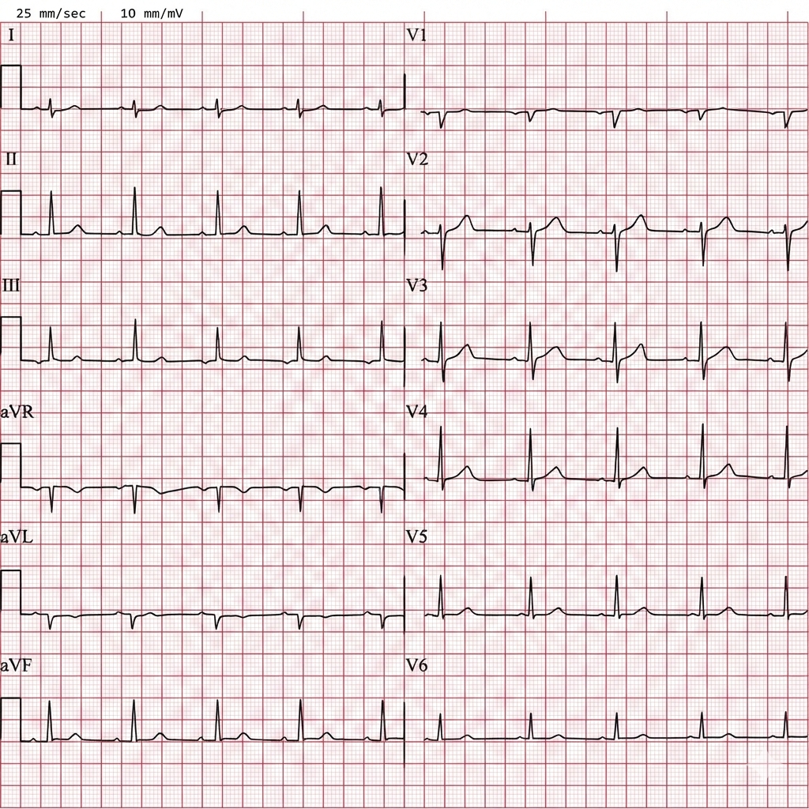
src.
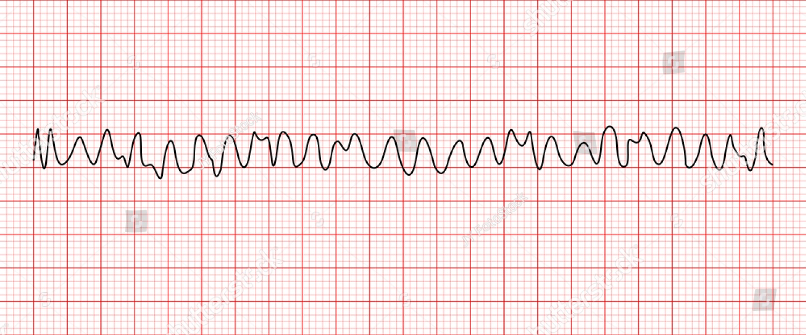
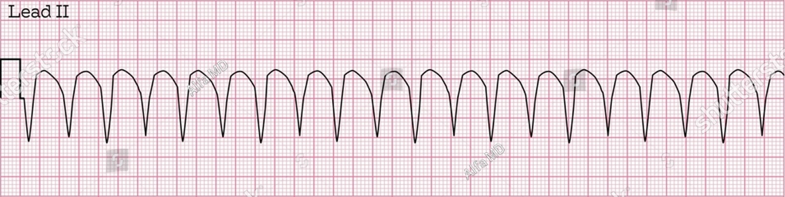
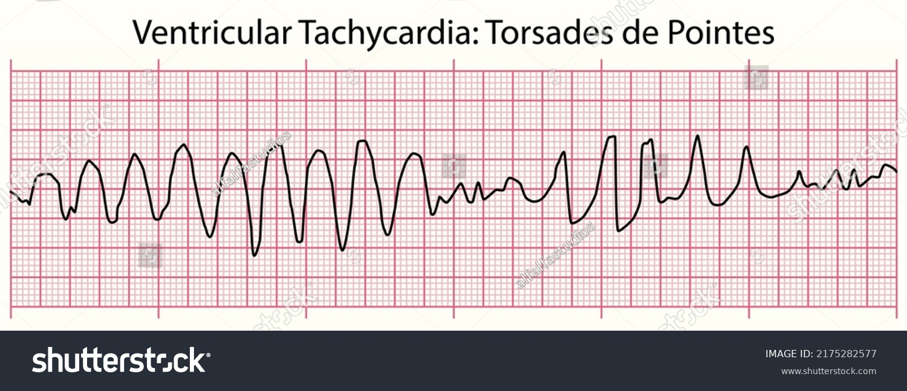
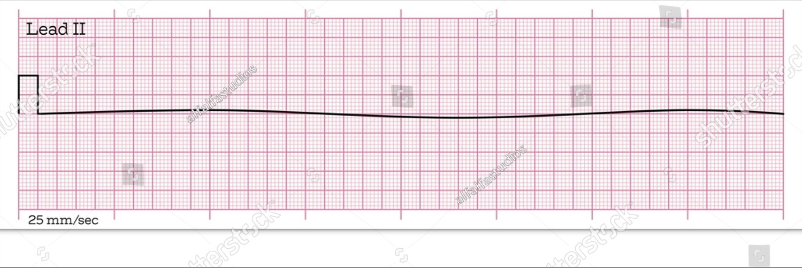
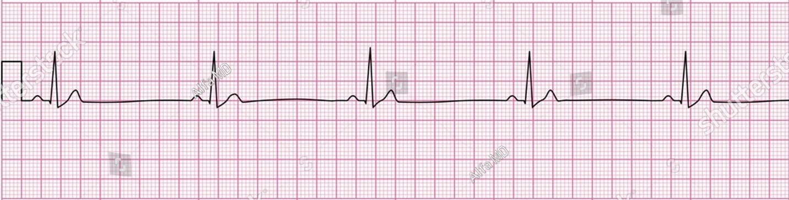
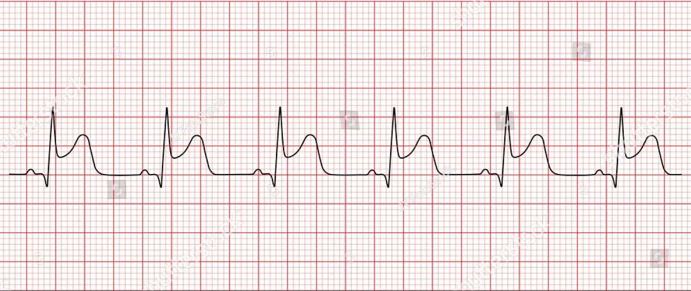
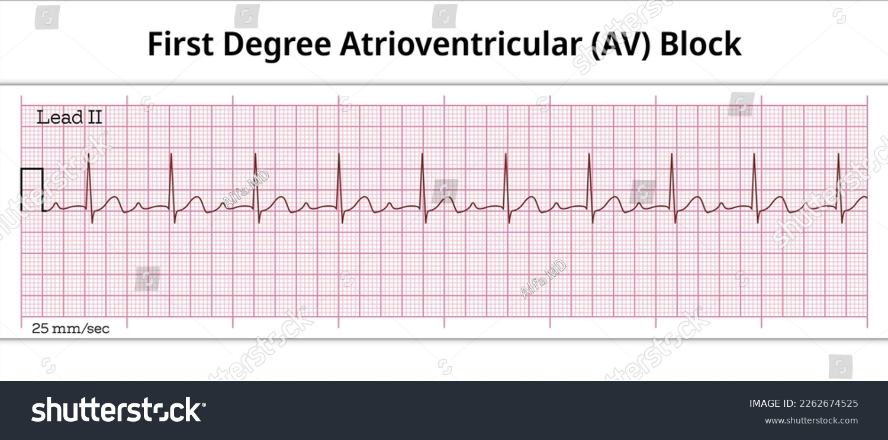
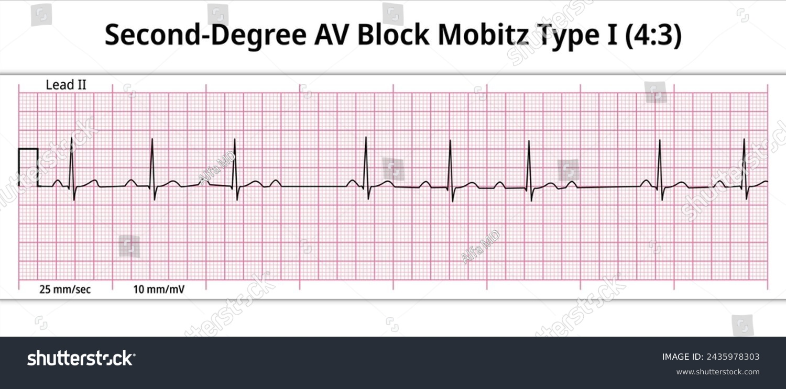
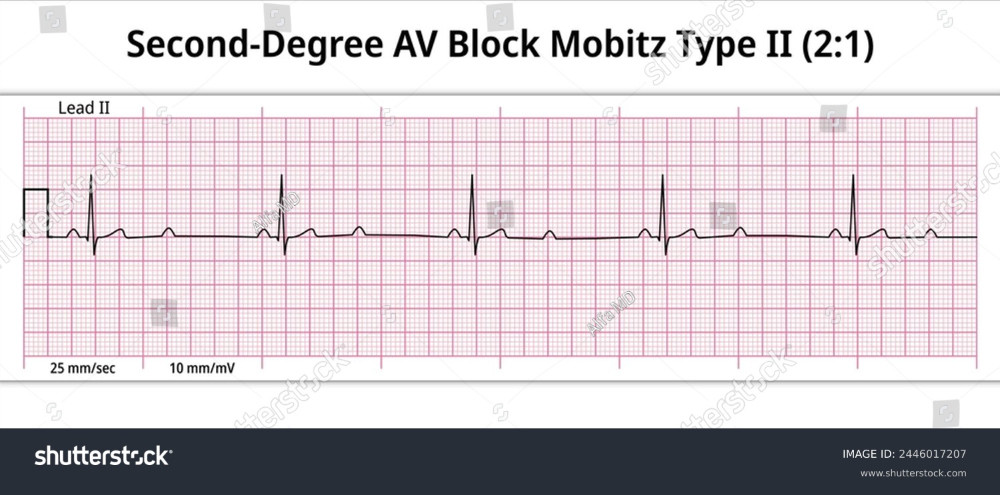
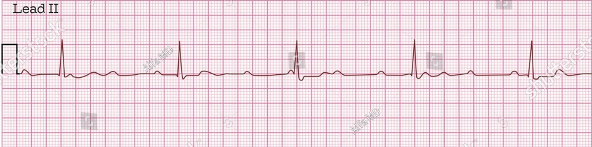
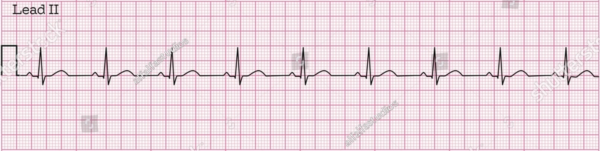
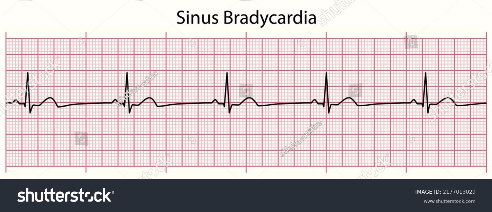
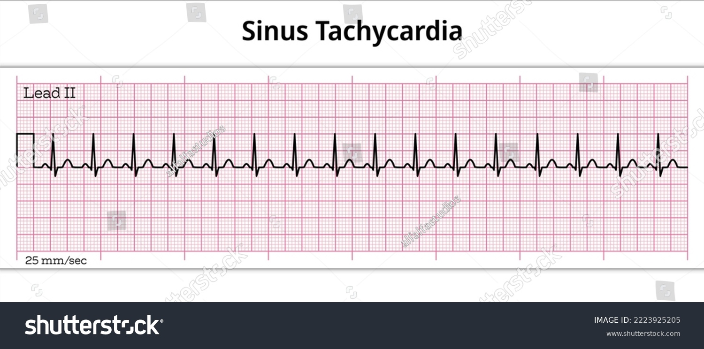
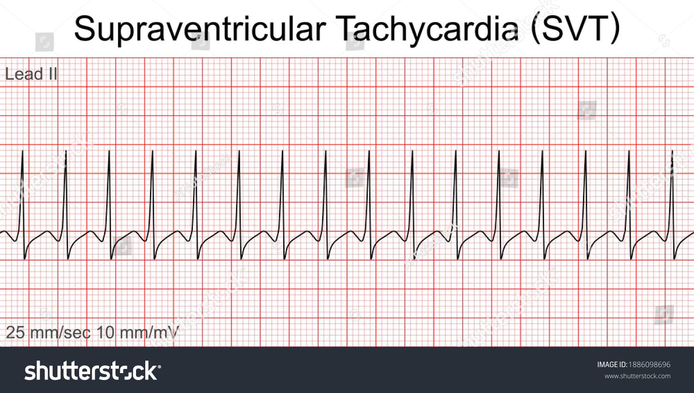
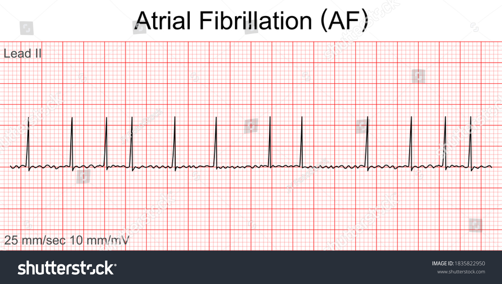
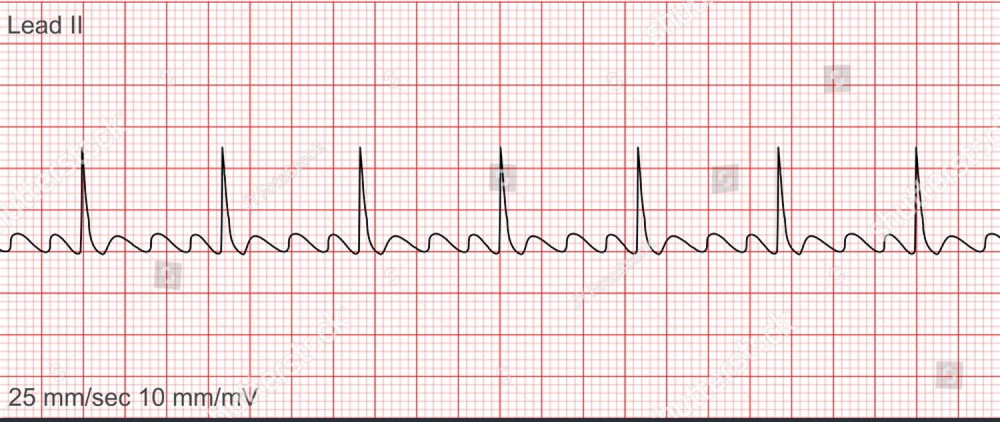
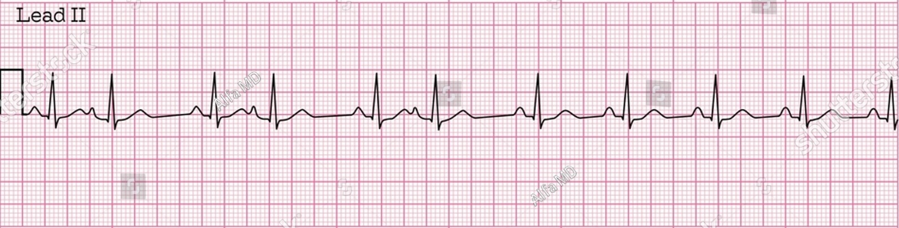
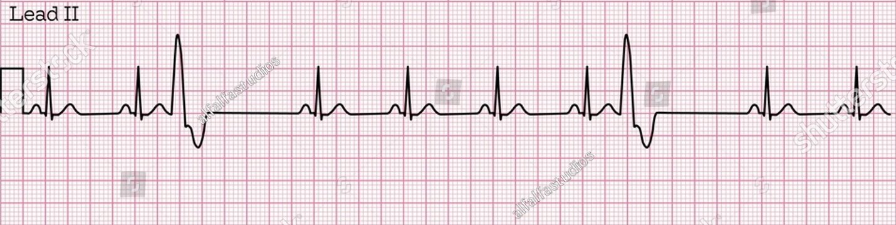
| Freq | Rate (Macro) |
|---|---|
| Q1H (500ml) | 1s / 3 drops |
| Q2H (250ml) | 2s / 3 drops |
| Q4H (125ml) | 3s / 2 drops |
| Q6H (83ml) | 2s / 1 drop |
| Q8H (62ml) | 3s / 1 drop |
| Q12H (41ml) | 4s / 1 drop |
Search common investigation names or report wording, then tap a card for a practical interpretation and bedside actions.
Investigation choice and interpretation belong to the treating team and reporting specialist. These links provide patient-facing or professional guidance from ACR / RSNA, AHA and ASE.